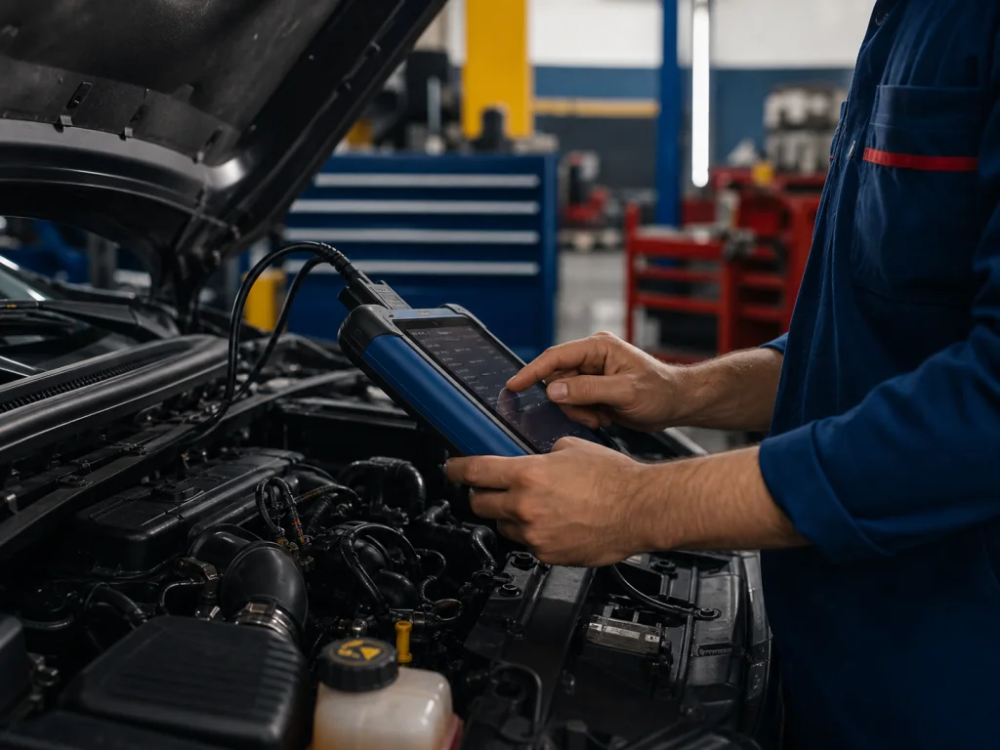
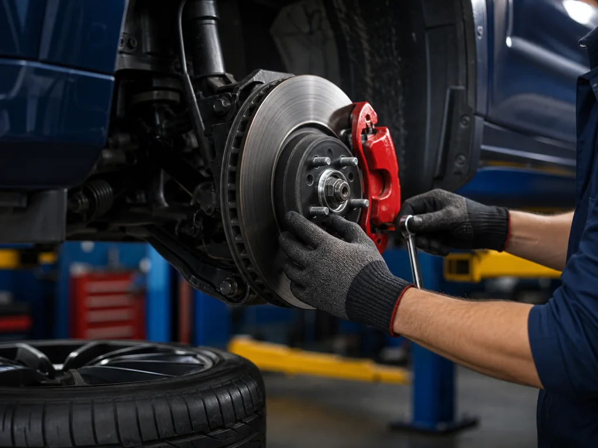

Diagnostico
Identificacao clara de falhas, barulhos, luzes no painel e sintomas em carros populares e multimarcas.
Curitiba e região metropolitana | carros populares e multimarcas
A Auto Center Modelo atende motoristas de Curitiba e RMC com diagnostico claro, servico bem feito e contato direto pelo WhatsApp para marcas como Fiat, Chevrolet, Volkswagen, Renault, Hyundai, Toyota, Honda, Nissan.
Marcas atendidas
Servicos
Organizamos os principais atendimentos para carros populares e multimarcas, com copy direta para transformar visitantes em conversas no WhatsApp.

Identificacao clara de falhas, barulhos, luzes no painel e sintomas em carros populares e multimarcas.

Itens essenciais para seguranca em ruas movimentadas, chuva e deslocamentos pela RMC.
Manutencao planejada para reduzir surpresa, retrabalho e gasto maior depois.
Google e buscas com IA
Esta pagina foi estruturada com informacoes claras sobre servicos, marcas atendidas, localizacao, atendimento e perguntas frequentes. Isso ajuda buscadores como Google e ferramentas com IA a entenderem melhor o que a empresa faz, onde atende e quais servicos oferece.
Regionalizacao
Os sites usam contexto local de Curitiba e regiao metropolitana para parecerem menos genericos: bairros, ruas, clima, rotina urbana e necessidades reais de quem dirige pela cidade.
Onde o cliente se reconhece
Esse contexto tambem entra nos prompts das imagens, para criar cenas mais proximas de Curitiba/RMC em vez de fotos com cara de banco de imagem internacional.
Perguntas frequentes
Chame no WhatsApp, envie modelo, ano do carro e descreva o problema percebido.
A pagina destaca Fiat, Chevrolet, Volkswagen, Renault, Hyundai, Toyota, Honda, Nissan. A oficina pode confirmar pelo WhatsApp se atende seu modelo especifico.
WhatsApp +55 (41) 99999-9999 contato@example.com
Proximo passo
Explique o que aconteceu, informe marca e modelo do carro e receba orientacao pelo WhatsApp.